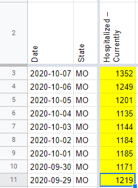
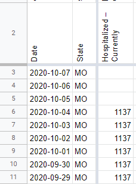

[MO] Backfilling curr. hosp. numbers 9/29 - 10/7
Issue number 904
the-daniel-lin opened this issue on October 20, 2020 at 10:45 am
Labels Data quality Backfill
State or US: Missouri
Describe the problem On 9/28, Missouri updated their dashboard. This new dashboard did not report current hospitalization numbers, so we carried over the value for 7 days. As per CTP policy, we stopped carrying over the current hospitalization value after 7 days. On 10/8, MO returned the value to their dashboard, and we have captured ever since.
Backfilling the days we missed, using the hover-over graph labeled “COVID-19 Total Patients in the Hospital by Day” on the MO website, under the Detail: Healthcare System tab.
Link to data source https://showmestrong.mo.gov/public-healthcare/
As of 10/20 13:43, the values from the graph are: 10/7: 1352 10/6: 1249 10/5: 1201 10/4: 1135 10/3: 1144 10/2: 1184 10/1: 1185 9/30: 1171 9/29: 1219
AFTER: 
BEFORE: 